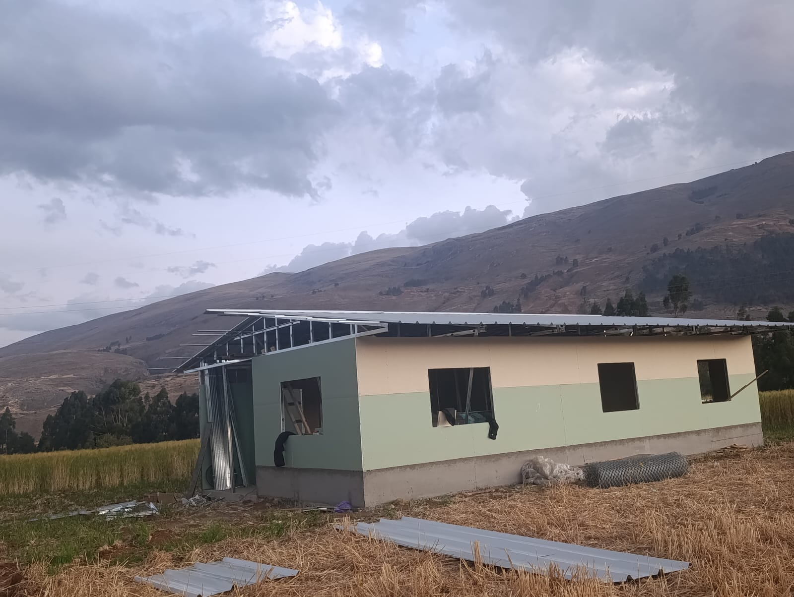

ANTES DE CONSTRUIR
Conozcamos el lugar
de tu próxima historia.
Comparte la información de tu terreno para consultar la viabilidad y las condiciones de tu proyecto. Si aún estás buscando, cuéntanos en qué zona te gustaría construir.

Lo que puedes
tener a mano.
- Ubicación y medidas aproximadas.
- Fotografías y descripción del acceso.
- Pendiente y condiciones visibles del terreno.
- Disponibilidad de agua, desagüe y electricidad.
- Información y documentos del predio.
La evaluación profesional, los estudios y los requisitos aplicables se definen para cada caso. Consulta su disponibilidad y alcance con Romerito.
Consultar sobre mi terrenoRESOLVAMOS TUS DUDAS
Antes de dar
el gran paso.
Información para empezar
con las cosas claras.
¿Puedo empezar si todavía no tengo terreno?
Sí puedes empezar a ordenar tus ideas y necesidades. Para definir la viabilidad y una propuesta concreta, será necesario conocer la ubicación y las características del terreno. Consulta con Romerito el siguiente paso.
¿Qué influye en el presupuesto?
La superficie, el sistema constructivo, la distribución, los acabados y la ubicación. También debes confirmar transporte, base, instalaciones y trabajos complementarios incluidos en la propuesta.
¿En cuánto tiempo estará lista mi casa?
No hay un plazo único. Solicita un calendario para tu proyecto, considerando diseño, preparación del terreno, materiales, transporte y montaje.
¿Puedo elegir la distribución y los acabados?
Comparte tus preferencias de dormitorios, baños, cocina, terraza y acabados. Las opciones finales se revisan según el sistema constructivo y las condiciones del proyecto.
¿Qué información necesitan sobre mi terreno?
La ubicación, sus medidas aproximadas, fotografías, acceso y disponibilidad de servicios son un buen punto de partida. Los estudios y requisitos específicos deben revisarse antes de construir.
¿Ofrecen financiación?
Las opciones y condiciones de pago deben consultarse directamente. Esta web no ofrece créditos ni garantiza financiación o aprobación bancaria.
¿Los modelos de la galería son obras realizadas?
La galería reúne fotografías y diseños de referencia compartidos para presentar ideas. Las imágenes de inspiración no acreditan obras realizadas por Romerito.
¿Qué materiales se utilizan?
Depende de la solución acordada. En la página de materiales encontrarás los aspectos que conviene revisar: estructura, cerramientos, cubierta, aislamiento y acabados. Pide la especificación de tu proyecto.
¿Se puede ampliar una casa más adelante?
Si prevés ampliar, coméntalo desde el inicio. La posibilidad depende del diseño, estructura, terreno y requisitos que correspondan al proyecto.
¿Cómo solicito una cotización?
Completa el configurador o el formulario de presupuesto. Podrás revisar el resumen y abrir WhatsApp para enviarlo a Romerito.
¿Qué mantenimiento requiere?
Solicita las recomendaciones correspondientes a los materiales instalados: cubierta, sellos, pintura, madera e instalaciones. La frecuencia dependerá del producto y del entorno.
¿Trabajan en mi zona?
Indica tu distrito, provincia o departamento al consultar. Romerito confirmará la cobertura y las condiciones de traslado para tu ubicación.
TU PRÓXIMO CAPÍTULO
Lo que imaginas,
empieza aquí.
Hablemos de tu terreno, tus ideas
y ese lugar que quieres llamar hogar.